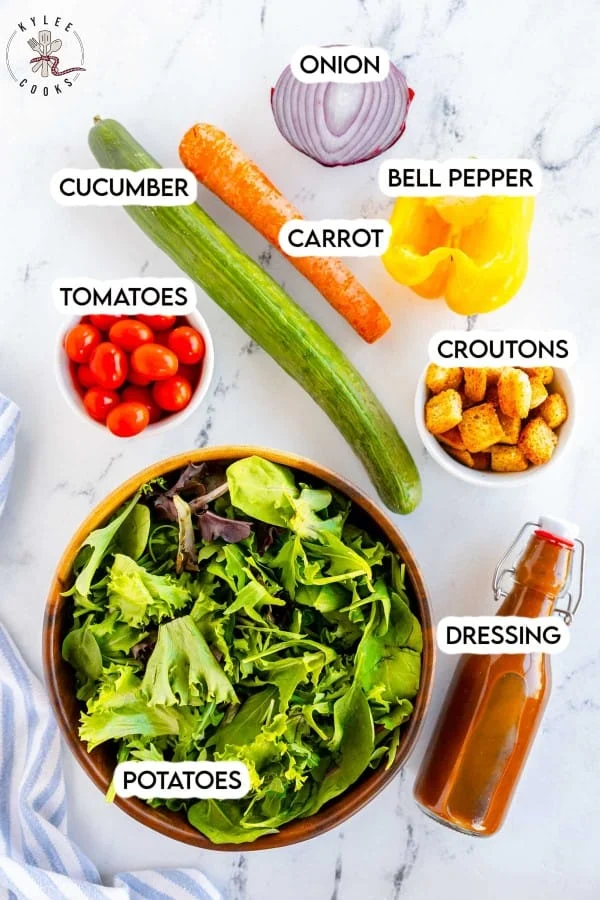

A colorful, antioxidant-packed garden bowl bursting with crunch! Crisp romaine and iceberg greens tossed with sweet grapes, toasted walnuts, kalamata olives, and feta cheese in a lemon-oregano vinaigrette.

Wash fresh romaine and butter lettuce in cold water. Spin completely dry in a salad spinner for maximum dressing adhesion and crisp bite.
Thinly slice crisp English cucumbers, grate sweet carrots, slice red onions, and halve sweet red seedless grapes.
In a small jar, vigorously shake extra-virgin olive oil, freshly squeezed lemon juice, sea salt, and freshly cracked black pepper.
In a large bowl, combine greens, vegetables, and grapes. Drizzle dressing, toss gently, and top with toasted walnuts and crumbled Greek feta.